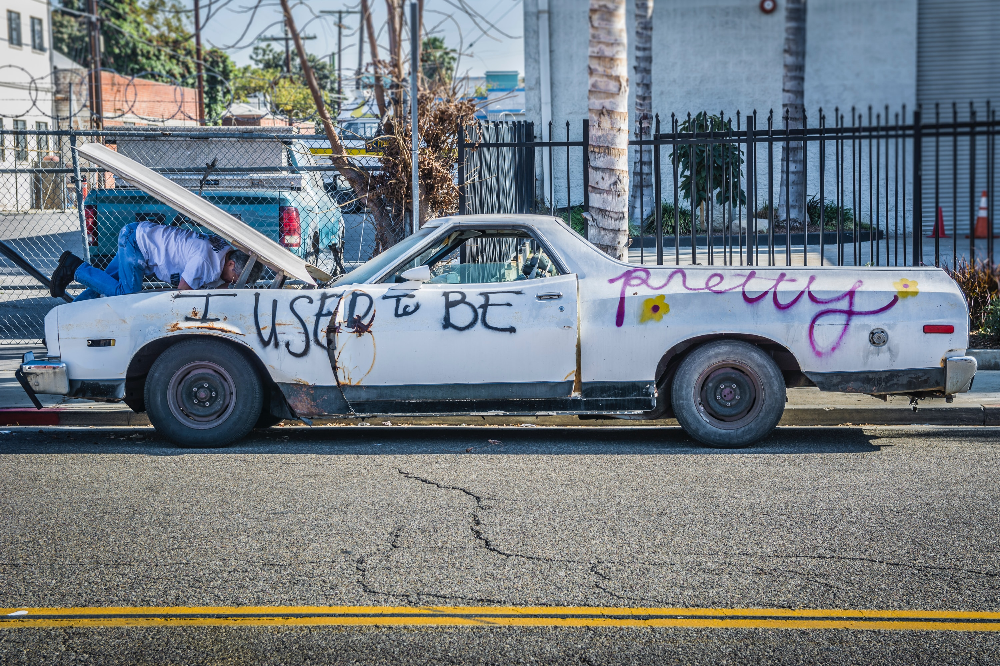

I am Main Page
Welcome to AutoAdvice
In December of 2022 I found myself in need of a new car. While shopping around I found myself wishing that I had some tools that I could use on the go so that I could substantiate some of the claims being made by used car salesmen. I also learned about things to look out for in used cars such as accident history and how that can affect future car problems depending on the issue. This website and its resources are inspired by what I went through in navigating the used car sales world and what I wished I had known or had available at the time. The idea for this website came about because I had bought a new used car and was talking about it to several people at work and I found that many of them were just asking me for tips and advice. I am not a mechanic or a car loving person, but I found that people cared to hear from the experience of someone like them that knew very little about buying new used cars and what I wished I had known. This site is for those people that know little about buying used cars for whatever reason to help them not get taken advantage of and mitigate regrets.

Calculator